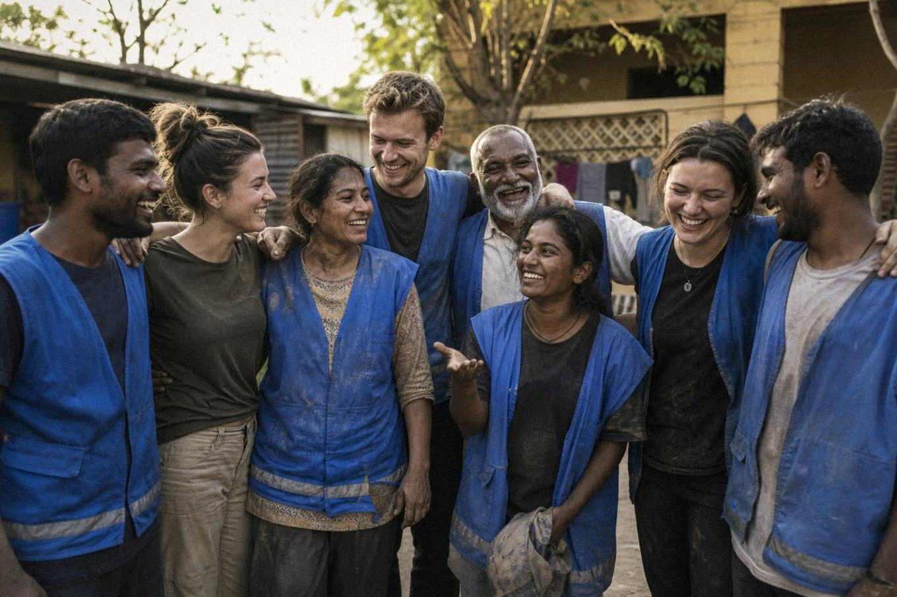

Get Involved
210 volunteers. 14 communities. One simple rule — show up like it’s family. There’s a place for you.
Volunteer
Distribution days, tutoring, care visits, medical camps. Orientation every first Saturday, 10 AM, at our Multan office.
Partner
Businesses, clinics and schools power our work — 9 active partners including two private hospitals and a logistics firm. Email partners@mankindfirst.org.
Fundraise
Turn your birthday, wedding or cricket match into a fundraiser. We provide the materials, receipts and a full report of where every rupee went.
Donate
PKR 3,500 feeds a family for a week. Give via GoFundMe (international) or bank transfer (Pakistan) — details on the Donate page.
Share
Follow and share our updates. Half of our new volunteers last year came from a single WhatsApp forward. Be that forward.
Give skills
Doctors, teachers, IT trainers, accountants — professional skills multiply everything. Our volunteer medics alone have treated 3,400 patients.

After distribution day in Vehari — tired, dusty, happy.Give a day. Gain a family.
- Meaningful roles — matched to your real skills: teaching, medical, logistics, photography, data.
- Proper support — screening, orientation and safeguarding training before any field work.
- Real community — monthly volunteer dinners, annual recognition, friendships that outlast projects.
- Certificates — verified service hours for students and professionals (we sign university/employer forms).
Become volunteer #211
Fill in the form and tell us a little about yourself. Our volunteer coordinator replies within 3 working days, and orientation runs the first Saturday of every month at 10 AM.
- Open to everyone 16+ (under-18s join with guardian consent).
- Work with children or vulnerable adults requires our safeguarding briefing.
- Your details are used only to coordinate volunteering — see our Privacy Policy.
Not ready to volunteer yet?
A single share or small donation still moves the mission forward.